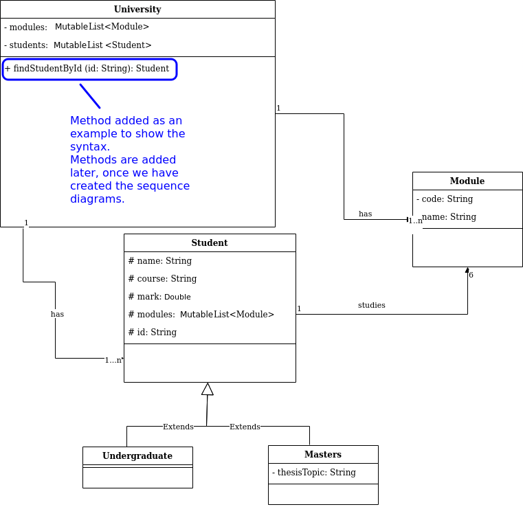

What we will cover this week
- What is Analysis and Design?
- What is UML?
- Domain Models and Class Diagrams
- Use Case Diagrams
Introduction to analysis and design
What is Analysis and Design?
When building software, we need to ensure we create something which is what the user wants. To achieve this, we should perform analysis and design before we start coding. There are two components:
- Analysis: We analyse the problem by breaking it down to get an
idea of such things as:
- How a user will interact with the system
- How the system will respond
- How the system will react to errors
- Design: using our analysis, we design the classes in our system by working out their attributes and methods and how they interact
UML: Unified Modelling Language
Object-oriented analysis and design makes use of UML. UML is an extensive set of diagrammatic tools to enable developers to analyse a problem and design an object-oriented solution to the problem before coding it. These diagrammatic tools include (but are not restricted to):
- Use-case diagrams
- Class diagrams
- Sequence diagrams
UML is not an analysis and design process; rather it is a set of tools which can aid us in that process. It can be used in various different analysis and design techniques, such as ICONIX, discussed in a later week.
The problem statement
Analysis and design starts with a problem statement. This is a written description of what is required of the application, and will typically be produced by gathering requirements from the target users. Here is an example:
There is a requirement for a software application to allow a university to manage its undergraduate and masters students and modules. Each student and module is identified by a unique ID. University admins need to be able to look up students and modules by ID, look up students by name, and enrol students on modules. The system should record all modules a student is enrolled on, and the thesis topic for a masters' student. Students are enrolled on a total of 6 modules. It may be necessary to remove a student from the university or update the student's contact details.
What do we do with the problem statement?
We perform an analysis on the problem statement and derive two classes of artefact from it:
- The domain model and initial class diagrams. These represent potential classes in the system and how they interact. Thus, we are thinking of the system from a code-oriented point of view.
- The use case diagram. This is a diagram showing how users can interact with the system and what tasks different types of user can perform. Thus it is thinking of the system from a user-oriented point of view.
The domain model
The domain model is an initial diagram showing possible classes in the system, and their interaction. We derive it by:
- analysing the problem statement, and looking for nouns and their interactions - these are our first guess at classes in the system
- Having derived a list of possible objects, we then connect them together to illustrate the relationship between them
For example, for the student records application, specified in the problem statement above, we could identify likely nouns as below:
There is a requirement for a software application to allow a university to manage its undergraduate and masters students and its modules. Each student and module is identified by a unique ID. University admins need to be able to look up students and modules by ID, look up students by name, and enrol students on modules. The system should record all modules a student is enrolled on and the thesis topic for a masters' student. Students are enrolled on a total of 6 modules. It may be necessary to remove a student from the university or update the student's contact details.These likely nouns appear:
- university;
- student;
- module.
- unique ID;
- name;
- thesis topic.
- university administrator,

This shows the three possible classes in the system, and the relationship between them as annotations.
Multiplicity
The domain model also includes multiplicity. Multiplicity is an indication of how many objects of each class are interacting with each other. The diagram above is indicating that:
- A University may contain one or more (
1..n) Modules. This is known as a one-to-many relationship. - A University may contain one or more (
1..n) Students - A Student studies 6 Modules (shown as simply
6
1.Class diagrams
Class diagrams show the classes in the system, their inter-relationships, and the attributes and methods of each class. The class diagram is an extension of the domain model, with attributes and methods added.
How to derive the class diagram
- Classes and their interrelationships come from the domain model
- When first analysing the problem statement, you can add a first guess at likely attributes to the domain model to produce an initial class diagram
- The initial class diagram can also contain an initial guess at the methods. However, it will be updated later to add further methods, once we have gone through the full analysis and design process - which will reveal additional methods.
Class diagram syntax
Each class is represented by a box, with content as follows:
- Each class begins with the class name, followed by a horizontal line
- Attributes are denoted by:
ACCESS AttributeName: AttributeType
where ACCESS is:- + : public - accessible from anywhere
- - : private - accessible only from instances of the current class
- # : protected - accessible from instances of both the current class and subclasses
- A further horizontal line separates the attributes and methods
- Methods also have an access indicator, and show parameters and return types are, using this syntax (also used in the Kotlin language, which many of you will do next term):
ACCESS method(param1: DataType, param2: DataType): ReturnType
- Regular lines, annotated by multiplicity indicators, link classes (as in the domain model)
- Additionally, arrows with unfilled heads indicate inheritance
- There are also special syntaxes for aggregation and composition
Here is an example, based on the domain model above. Note that for now, we have only added attributes. Methods are typically added later in the analysis and design process, as we saw above.

Note that the attributes we have added can be derived from the problem statement, above. Also, where a class contains one or more of another (e.g. a university contains one or more students or modules) this would translate to an attribute. So a one-to-many relationship (1..n) would require a list and a one-to-one relationship (1..1) would require a simple attribute. For example, the
University contains one or many Students so the University needs to contain a List of Student objects.
Inheritance in class diagrams
Inheritance in class diagrams is shown via an open arrow pointing at the superclass, for example:
Use cases
We may return to this in a later week, depending on how you are progressing.
The other step we need to take as an initial analysis and design step is use-case analysis. This takes a different approach to the problem compared to the domain model by considering the system from a user point of view; i.e. thinking about how the user will interact with the system. For example, we consider questions such as:
- Who are the users?
- How are they able to interact with the system?
An example use case diagram
A use case diagram shows:
- The actor(s)
- These are the external entities interacting with the system: typically, but not necessarily, humans (the university administrator in our example)
- Actors can be non-human, for example if an automated background process was interacting with the system (e.g. auto-removing students whose degree has finished) this would be an actor too
- Represented by matchstick figures
- The use cases themselves
- These are the tasks which the actors need to perform with the system
- They can be derived by analysing the problem statement
- e.g. for the university admin application, these could be:
- Enrol student
- Search for student by ID
- Search for students by name
- Create module
- Add module to student
- Edit student details
- Delete student
- From these, we would draw the use-case diagram below. Note the actor (matchstick figure) and use cases themselves (shown as ovals).

Dependencies between use cases
A more detailed use-case diagram will show dependencies between use cases. Dependencies include:
- A use case extending another; this is when the second use case is an optional extension of the first
- For example,
delete a studentmight extendsearch for a student, because after searching for a student object, the administrator might optionally delete it
- For example,
- A use case including another; this is where the second use case is part of the process of the first
- For example,
enrol a studentmight includeedit student details, because student details is part of the process of enrolling a student
- For example,
- A use case preceding another; this indicates that the first use case must take place sometime before the second
- For example, the
loginuse case might precede enrolling a student, updating a student's details, or deleting a student
- For example, the

See diagrams.net: "Draw a UML use case diagram".
Generalised and specialised actors
- A use-case diagram can have more than one actor, as different use cases might be performed by different actors
- Through use of the generalisation symbol in UML (an arrow with an unfilled arrow-head), we can distinguish between generalised actors and more specialised actors
- An example for the university system might be if senior administrators (only) were allowed to add staff. The senior administrator is a more specialised version of the administrator, so they can do all use cases that administrators can do, as well as their own specific use case of adding a member of staff.
- The example below shows this

Drawing the diagrams - diagrams.net
We will be using diagrams.net, an online piece of free software, to draw the diagrams. The labs will start with a live demo of this so please ensure you attend (or if you cannot attend, please ensure you watch the video later). diagrams.net have produced a very useful and extensive blog explaining how to draw different types of diagram. You will probably find the following particularly useful:
Exercise
Look at this problem statement:
There is a requirement for a piece of software to manage bands and bookings for a live music venue. Customers should be able to view all events, search for and book events, as well as cancel bookings, on the web. Customers can also call the venue to book over the phone: venue staff should also be able to perform these tasks on behalf of customers when they book over the phone. Venue staff should be able to add and cancel events.
- Create a domain model for this problem statement.
- Add some likely attributes, and an initial guess at methods, to the domain model to produce a class diagram.
- Before moving onto use cases, ensure you have finished Questions 1-7 of Week 2, and questions 1 and 2 of week 3. You need all these for the first assignment (the group project).
- List some possible use cases for this scenario. You do not have to draw a diagram just yet - just list some likely use cases.
- If you have time, draw up a use-case diagram showing these use cases. (If you do not have enough time, please attend the drop-in session; if you still do not have enough time, there will be an opportunity to create a use-case diagram next week).